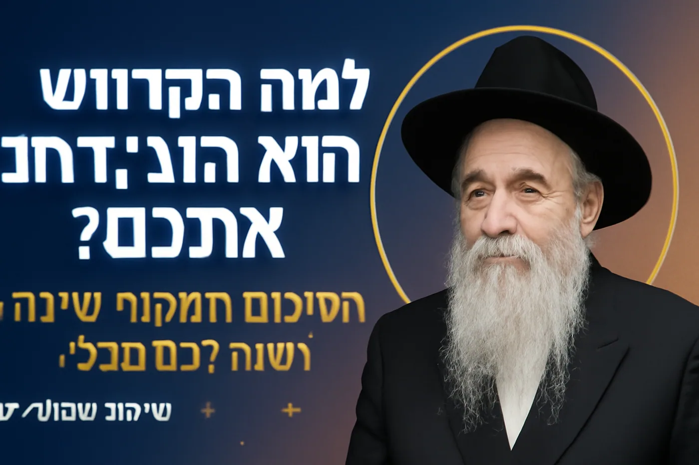

ניתוח הסרטון הנוכחי
הסרטון מציג סיכום מקיף ועמוק של הרב יהודה טאוב לשיעורים של השבוע הקודם, המתמקד בשני נושאים יסודיים: אורח טוב והכרת הטוב ולמה הקדוש ברוך הוא מביא מכשולים לפני הצלחה. זהו שיעור מקיף שמחבר בין פסיכולוגיה אנושית לעבודת השם בצורה מעשית ומרגשת.מסרים עיקריים:
- אורח טוב = לחפש להסתכל על הצד הטוב תמיד
- הדבר שבני אדם הכי נהנים ממנו: להרגיש חשובים ומוערכים
- הקדוש ברוך הוא מביא מכשולים בהתחלה כדי שלא נתגאה
- עיקר עשיית מצווה היא השמחה אחר כך, לא המעשה עצמו
- המכשולים באמצע הדרך באים כדי שנשמח יותר כשמצליחים
כותרות מוצעות (מדורגות לפי עוצמת SEO)
עוצמה: שאלה אישית שכולם חווים + הסבר על תופעה מוכרת + פרדוקס מעניין
2. ⭐⭐⭐⭐⭐ "הסוד הנסתר: מה בני אדם באמת רוצים יותר מכסף ובריאות"
עוצמה: רמז לסוד + השוואה למשאבים חשובים + סקרנות אוניברסלית
3. ⭐⭐⭐⭐ "החזון איש חשף: מה החשוב יותר - המצווה או השמחה אחרי?"
עוצמה: סמכות דתית + שאלה מפתיעה + דילמה מעניינת
4. ⭐⭐⭐⭐ "5 דקות שיסבירו לכם למה החיים שלכם כל כך קשים - ויקלו אותם"
עוצמה: זמן קצר + הבנת סבל אישי + הבטחת הקלה
5. ⭐⭐⭐ "איך להפסיק לכעוס על מכשולים ולהתחיל לדעת שהם בשבילכם"
עוצמה: פתרון לבעיה נפוצה + שינוי פרספקטיבה + יישום מעשי
תיאור מלא מותאם SEO
🎯 למה דווקא כשאתם מתחילים להצליח, הכל קורס? מה בני אדם באמת רוצים יותר מכסף? הרב יהודה טאוב חושף את הסודות הנסתרים מאחורי המכשולים בחיים!
📚 בסיכום המקיף הזה תגלו:
• למה הקדוש ברוך הוא מביא דווקא מכשולים לפני הצלחה (והאדם לא בוחר זאת!)
• מה הדבר שבני אדם הכי נהנים ממנו - יותר מכסף, בריאות או כל דבר אחר
• למה עיקר עשיית מצווה זה לא המעשה אלא השמחה שאחרי
🎯 מה תבינו מהצפייה:
הגילוי המדהים של החזון איש: "עיקר עשיית מצווה היא שמחתה שזכינו לכך" - לא התפילה חשובה, אלא השמחה שזכיתם להתפלל! וכיצד הקדוש ברוך הוא "מפיל" אותנו כדי שנשמח יותר כשמצליחים.
💡 יישומים מעשיים מהשיעור:
1. איך להיות "אורח טוב" - לחפש תמיד את הצד הטוב בכל מצב
2. הדרך הכי חשובה לעשות חסד: לתת לאנשים להרגיש חשובים ומוערכים
3. איך להכין את עצמכם נפשית למכשולים - וגם לשמוח עליהם!
📖 מקורות נוספים:
חזון איש על עיקר עשיית מצווה, גמרא ברכות על כוח השבח, ספרי מוסר על התמודדות עם מכשולים, כתבי החסידות על "ירידה לצורך עלייה".
🤝 הצטרפו לקהילה:
📺 ערוץ יוטיוב: https://www.youtube.com/channel/UCtW9paDQ9Gq6aVmAfuu8Onw
💬 עוד תובנות מרגשות על גאולה, הכרת הטוב וחכמת החיים
#מכשוליםבחיים #אורחטוב #חזוןאיש #עיקרעשייתמצווה #הכרתהטוב #רבטאוב #למהבאיםקשיים #שמחהבמצוות #פסיכולוגיהיהודית #חכמתהחייםרשימת תגיות מקצועית
תגיות ראשיות (עברית/אנגלית):
- מכשולים בעבודת השם / obstacles in spiritual work
- אורח טוב והכרת הטוב / good guest and gratitude
- חזון איש עשיית מצווה / Chazon Ish mitzvah performance
- למה באים קשיים / why difficulties come
- פסיכולוגיה יהודית / Jewish psychology
- רב יהודה טאוב סיכומים / Rabbi Yehuda Taub summaries
תגיות ארוכות ספציפיות:
- למה הקדוש ברוך הוא מביא מכשולים
- חזון איש עיקר עשיית מצווה שמחה
- איך לעשות חסד ולשבח אנשים
- רב יהודה טאוב על מכשולים בחיים
- מה בני אדם הכי רוצים בחיים
- ירידה לצורך עלייה ברוחניות
תגיות טרנדים (2025):
- התמודדות עם קשיים בחיים
- איך למצוא שמחה בקשיים
- פסיכולוגיה חיובית יהודית
- מוטיבציה רוחנית לחיים
- חכמת חיים מעשית
הוראות Thumbnail מדויקות
מפרט טכני:
- גודל: 1920×1080 פיקסלים
- משקל: מתחת 2MB
- פורמט: JPG
עיצוב מוצע:
- רקע: גרדיאנט מחושך למואר (מסמל מעבר ממכשול להצלחה)
- טקסט עברי מרכזי: "למה הקדוש ברוך הוא מפיל אתכם?" (לבן על כחול כהה, 62pt)
- טקסט משני: "הסיכום המקיף שישנה לכם הכל" (זהב בהיר, 40pt)
- תמונת הרב: שליש ימין, הבעת פנים חכמה ומבינה
- אלמנטים נוספים:
- חץ עולה קטן ליד המילה "מפיל" (מסמל עלייה אחרי ירידה)
- מסגרת עיגולית זהובה סביב הרב
- בפינה שמאל למטה: "סיכום שבועי 📚"
- כוכבים קטנים המתפזרים מחושך לאור
מאמר קצר לקידום
"למה החיים כל כך קשים? הסיכום שישנה לכם את ההבנה"
למה דווקא כשאתם מתחילים להצליח, הכל קורס? למה הקדוש ברוך הוא לא נותן לכם להצליח בקלות מההתחלה? הרב יהודה טאוב מביא תשובות מרעידות שיהפכו לכם את כל הקשיים לברכה.הגילוי הראשון: הקדוש ברוך הוא מביא מכשולים בהתחלה כדי שלא נחשוב "כוחי ועוצם ידי עשה לי את החיל הזה". אם היינו מצליחים מיד, היינו מתגאים. לכן הוא נותן לנו ליפול קודם - כדי שנדע שהצלחה מגיעה רק בעזרתו.הגילוי השני: מה בני אדם באמת רוצים יותר מכסף? להרגיש חשובים! זו התשוקה הכי גדולה שלנו. לכן החסד הכי גדול שאפשר לעשות זה לשבח מישהו ולגרום לו להרגיש מוערך. זה ממש עושה לו את היום!הגילוי השלישי: החזון איש אמר משהו מדהים - עיקר עשיית מצווה זה לא המעשה עצמו, אלא השמחה שאחרי שזכינו לעשות את המצווה! לא התפילה עצמה חשובה ביותר - אלא השמחה שזכיתם להתפלל.איך זה עובד? הקדוש ברוך הוא מפיל אותנו כמה ימים שלא נצליח להתפלל בכוונה, ואז כשמצליחים - אנחנו שמחים מאוד! זה העיקר.לצפייה בסיכום המלא: 🔗 ערוץ הרב יהודה טאוב: https://www.youtube.com/channel/UCtW9paDQ9Gq6aVmAfuu8Onw
ציטוטים לשיתוף
1. 💫 החזון איש המדהים:
"עיקר עשיית מצווה היא שמחתה שזכינו לכך" - החזון איש
2. 🎯 מעשי וחד:
"החסד הכי גדול: לתת לבני אדם להרגיש חשובים" - רב יהודה טאוב
3. 💪 מעצים:
"הקדוש ברוך הוא מפיל אותנו כדי שנשמח יותר כשמצליחים" - רב יהודה טאוב
4. 🔥 יסודי:
"אם היינו מצליחים מההתחלה - היינו חושבים שכוחי ועוצם ידי עשה" - רב יהודה טאוב
5. ⚡ מהפכני:
"עדיף שייפול עשרה פעמים מאשר פעם אחת בלי שמחה" - רב יהודה טאוב
המלצות עתידיות
נושאים לשיעורים נוספים:
- "איך להכין את עצמנו למכשולים הבאים" - מדריך מעשי להתמודדות
- "דוגמאות מהחיים על ירידה לצורך עלייה" - סיפורים אישיים
- "איך לשבח אנשים בצורה הנכונה" - מדריך מעשי לחסד
- "מתי המכשולים זה לא בשביל הטוב" - איזונים והבחנות
אופטימיזציות מיוחדות לסיכומים:
- יצירת פלייליסט "סיכומים שבועיים"
- הדגשת המילה "סיכום" בכותרות (אנשים אוהבים תוכן מסוכם)
- יצירת אינפוגרפיקה עם הנקודות העיקריות
- קישור לשיעורים המקוריים שמסוכמים
מדדי הצלחה לסיכומים:
- זמן צפייה גבוה (אנשים אוהבים תוכן מרוכז)
- שיתופים רבים (תוכן מסוכם נשתף יותר)
- תגובות עם מילים כמו "תודה על הסיכום", "עזר לי להבין"
הצעות לפורמטים נוספים:
- "השיעור בדקה אחת" - גרסה עוד יותר קצרה
- "הנקודות העיקריות באמצעים ויזואליים"
- "שאלות ותשובות על הסיכום"
- "המשך והעמקה לסיכום"
🔗 זכרו: סיכומים מקבלים ביצועים מעולים כי אנשים אוהבים תוכן מרוכז ומעשי שחוסך להם זמן!ערוץ הרב יהודה טאוב: https://www.youtube.com/channel/UCtW9paDQ9Gq6aVmAfuu8Onw